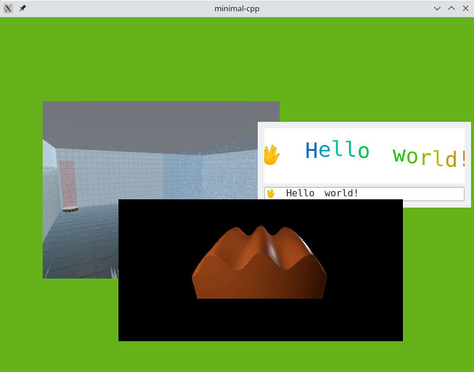

Minimal CPP
Minimal CPP is an example that demonstrates how to write a Wayland compositor in C++.
Minimal CPP is a minimalistic compositor example implementing a complete Qt Wayland Compositor using C++. The C++ API of QtWaylandCompositor is low-level and intended for specialized applications, such as supporting hardware features, or if Qt Quick is not available. The QML API offers more convenience and functionality. For comparison, the Minimal QML example implements more functionality with 30 lines of QML than this example does in 300+ lines.

This example is split in two parts. The Wayland logic is contained in the Compositor class, and the user interface is in the Window class.
Window
The Window class is fairly straight-forward. To display the Wayland surfaces, it iterates through the compositor's views and renders them on the screen using QOpenGLTextureBlitter:
void Window::paintGL() { m_compositor->startRender(); QOpenGLFunctions *functions = context()->functions(); functions->glClearColor(.4f, .7f, .1f, 0.5f); functions->glClear(GL_COLOR_BUFFER_BIT | GL_DEPTH_BUFFER_BIT); GLenum currentTarget = GL_TEXTURE_2D; m_textureBlitter.bind(currentTarget); functions->glEnable(GL_BLEND); functions->glBlendFunc(GL_SRC_ALPHA, GL_ONE_MINUS_SRC_ALPHA); const auto views = m_compositor->views(); for (View *view : views) { auto texture = view->getTexture(); if (!texture) continue; if (texture->target() != currentTarget) { currentTarget = texture->target(); m_textureBlitter.bind(currentTarget); } GLuint textureId = texture->textureId(); QWaylandSurface *surface = view->surface(); if (surface && surface->hasContent()) { QSize s = surface->destinationSize(); view->initPosition(size(), s); QPointF pos = view->globalPosition(); QRectF surfaceGeometry(pos, s); QOpenGLTextureBlitter::Origin surfaceOrigin = view->currentBuffer().origin() == QWaylandSurface::OriginTopLeft ? QOpenGLTextureBlitter::OriginTopLeft : QOpenGLTextureBlitter::OriginBottomLeft; QMatrix4x4 targetTransform = QOpenGLTextureBlitter::targetTransform(surfaceGeometry, QRect(QPoint(), size())); m_textureBlitter.blit(textureId, targetTransform, surfaceOrigin); } } m_textureBlitter.release(); m_compositor->endRender(); }
All keyboard and mouse events are delivered to the compositor. For example:
void Window::mousePressEvent(QMouseEvent *event) { m_compositor->handleMousePress(event->position().toPoint(), event->button()); }
Compositor
The Compositor class is more complex, since it has to implement much of the logic that would be handled by WaylandCompositor and WaylandQuickItem in a QML-based compositor.
The create function sets up the compositor, using the IviApplication, which is the most basic shell extension. The function is called after the OpenGL context has been initialized:
void Compositor::create() { QWaylandOutput *output = new QWaylandOutput(this, m_window); QWaylandOutputMode mode(m_window->size(), 60000); output->addMode(mode, true); QWaylandCompositor::create(); output->setCurrentMode(mode); m_iviApplication = new QWaylandIviApplication(this); connect(m_iviApplication, &QWaylandIviApplication::iviSurfaceCreated, this, &Compositor::onIviSurfaceCreated); }
All the logic for mouse events and keyboard focus has to be implemented manually, including implicit mouse grabs (sending all mouse moves to the surface that received the initial mouse press). Note that mouse press events in the Wayland protocol do not contain the mouse position, so we always have to send a mouse move when we reveive a mouse press:
void Compositor::handleMousePress(const QPoint &position, Qt::MouseButton button) { if (!m_mouseView) { if ((m_mouseView = viewAt(position))) raise(m_mouseView); } auto *seat = defaultSeat(); seat->sendMouseMoveEvent(m_mouseView, mapToView(m_mouseView, position)); seat->sendMousePressEvent(button); }
For a mouse release, we end the implicit grab and notify the surface at the current mouse position:
void Compositor::handleMousePress(const QPoint &position, Qt::MouseButton button) { if (!m_mouseView) { if ((m_mouseView = viewAt(position))) raise(m_mouseView); } auto *seat = defaultSeat(); seat->sendMouseMoveEvent(m_mouseView, mapToView(m_mouseView, position)); seat->sendMousePressEvent(button); }
When we are notified of a new surface, we create a View to keep track of it, and connect signals so we can handle updates.
void Compositor::onIviSurfaceCreated(QWaylandIviSurface *iviSurface) { View *view = new View(iviSurface->iviId()); view->setSurface(iviSurface->surface()); view->setOutput(outputFor(m_window)); m_views << view; connect(view, &QWaylandView::surfaceDestroyed, this, &Compositor::viewSurfaceDestroyed); connect(iviSurface->surface(), &QWaylandSurface::redraw, this, &Compositor::triggerRender); }
The View class subclasses QWaylandView, which represents a specific view of a surface. The advance function updates the view's current buffer and returns true if there is new content. The getTexture function makes the buffer contents available as an OpenGL texture for the benefit of the Window class:
QOpenGLTexture *View::getTexture() { if (advance()) m_texture = currentBuffer().toOpenGLTexture(); return m_texture; }